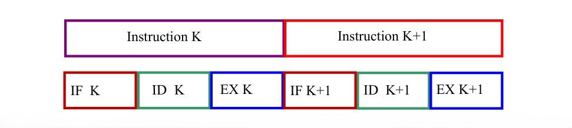
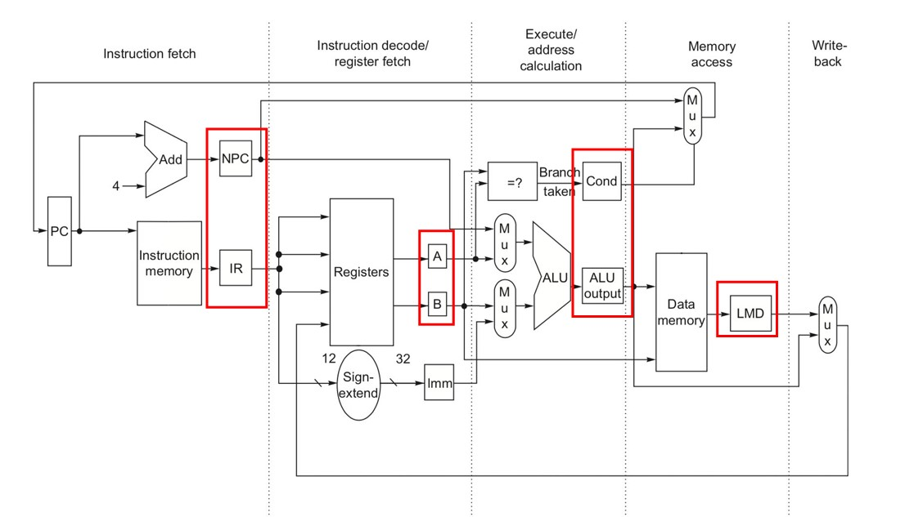
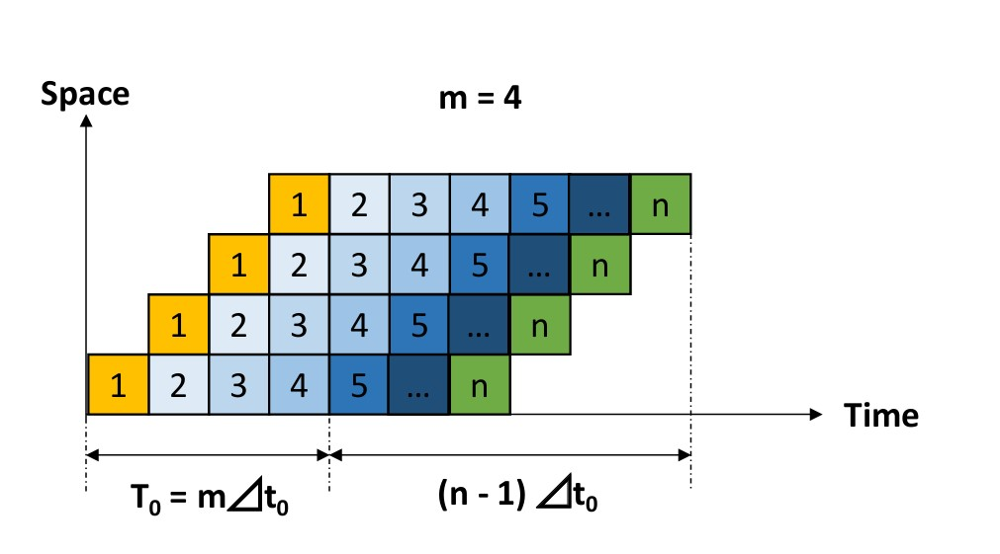

Chapter2 Pipelining
2.1 What is Pipelining
Three Modes of Execution：
- Sequential Execution 顺序执行

- Single Overlapping Execution 单重叠执行

- Twice Overlapping Execution 双重叠执行
当IF阶段时长很短时，IF阶段和ID阶段可以合并，双重叠变成单重叠。
Pipelining 流水线：

一种指令重叠执行的实现，划分出来的阶段称为stage/segment，阶段数称为流水线的depth。
Characteristics of Pipelining：
流水线将一个进程划分为多个子进程，每一个由一个功能单元执行。
流水线每个阶段的时长应尽可能相等，否则容易阻塞中断，最长的阶段为流水线的bottleneck。
每一个功能单元需要一个pipelining register（latch）。
流水线适用于大量、重复、顺序执行的进程，只有任务源源不断地进入流水线时，其效率才能最大化。
- pass time 通过时间： 第一个任务从进入流水线到结束（流水线充满）的时间
- empty time 排空时间： 最后一个任务从进入流水线（流水线开始空闲）到结束的时间
2.2 Classes of Pipelining
分类一：
- single function pipelining 单功能流水线： 只能实现单一功能，比如加法之类的
- multi function pipelining 多功能流水线： 可以实现多种功能，比如既能加法又能乘法之类的
分类二：
- static pipelining 静态流水线： 不同功能的指令无法重叠
- dynamic pipelining 动态流水线： 不同功能的指令可以重叠
分类三：
- component level pipelining 算术逻辑层级流水线： 将处理器的算术逻辑运算划分为不同阶段，比较少见
- processor level pipelining 指令级流水线： 通常认知里的流水线
- inter processor pipelining 宏流水线： 将完整任务分成若干部分，由不同处理器或处理器的各个核分别执行，最后汇总
分类四：
- linear pipelining 线性流水线： 没有回环，指令从头到尾执行，即从第一个阶段依次执行到最后一个阶段
- nonlinear pipelining 非线性流水线： 可能有回环，比如做到第三个阶段需要某个器件，而这个器件出现在第一个阶段，因此需要回到第一个阶段，会产生很多冲突，需要调度

分类五：
- ordered pipelining 循序流水线： 指令流入流水线和流出流水线的相对顺序不变
- disordered pipelining 乱序流水线： 指令流入流水线和流出流水线的相对顺序改变，比如晚流入流水线的任务反而会先流出流水线
分类六：
- scalar processor 标量处理器： 处理标量
- vector processor 矢量处理器： 处理矢量（GPU）
2.3 An Implementation of Pipelining
五级流水线：IF，ID，EXE，MEM，WB

- IR寄存器：保存指令
- NPC寄存器：保存下一条指令地址
- A寄存器和B寄存器：保存两个操作数
- ALU output寄存器：保存ALU计算的结果（数据或者地址）
- Cond寄存器：保存比较信号
- LMD寄存器：保存访存结果
2.4 Performance Evaluation of Pipelining
Single-Cycle vs. Pipelined Performance：

时钟周期：
单周期：看total time的最大值，为800ps。
流水线：看五个阶段的最大值，为200ps。
总执行时间：
考虑连续3条load型指令。
单周期：
$$800*3=2400$$
流水线：

$$200*7=1400$$
Throughput(TP) 吞吐量
单位时间内完成的指令数。
$$TP=\frac{n}{T}$$
其中，$n$为指令数，$T$为总时长。

对于上图所示的最佳重叠，$m$为流水线的深度，假设每个阶段耗时均为$\Delta t_0$，则总时长
$$T=(m+n-1)\Delta t_0$$
因此，得到吞吐量
$$TP=\frac{n}{(m+n-1)\Delta t_0}$$
当$n\gg m$时，$TP$趋向于上界
$$TP_{max}=\frac{1}{\Delta t_0}$$
若$m$阶流水线中，每个阶段的时长不等，分别为$\Delta t_1,\Delta t_2,···,\Delta t_m$。

则$TP$应该修正为
$$TP=\frac{n}{\sum\limits_{i=1}^m\Delta t_i+(n-1)\max\{\Delta t_1,\Delta t_2,···,\Delta t_m\}}$$
$TP_{\max}$应该修正为
$$TP_{\max}=\frac{1}{\max \{\Delta t_1,\Delta t_2,···,\Delta t_m\}}$$
$\max \{\Delta t_1,\Delta t_2,···,\Delta t_m\}$被称为流水线的bottleneck，对应的阶段为bottleneck segment。
解决bottleneck可以使用：
- subdivision 再细分： 将bottleneck segment再细分为更多更小的阶段
- repetition 重复： 添加bottleneck segment对应的功能单元

以下为repetition对应的时空图：
Speedup(Sp) 加速比
对于相同数量的指令，单周期总耗时与流水线总耗时的比值。
$$Sp=\frac{T_{single}}{T_{pipeline}}$$
假设有$n$条指令，分为$m$个阶段，每个阶段时长均为$\Delta t_0$，则单周期总耗时
$$T_{single}=n m\Delta t_0$$
流水线总耗时
$$T_{pipeline}=(m+n-1)\Delta t_0$$
因此，得到加速比
$$Sp=\frac{nm}{m+n-1}$$
当$n\gg m$时，$Sp\rightarrow m$。
Efficiency(η) 效率
时空资源利用的比率，可理解为时空图中阶段方块与完整矩形面积的比值。
$$\eta=\frac{nm\Delta t_0}{m(m+n-1)\Delta t_0}=\frac{n}{m+n-1}$$
当$n\gg m$时，$\eta\rightarrow 1$。
Example
如下图所示为静态双功能流水线：

其中，$1\rightarrow 2\rightarrow 3\rightarrow 5$是加法流水线，$1\rightarrow 4\rightarrow 5$是乘法流水线，每个阶段时长均为$\Delta t$。 现在有两个向量$\vec{A}=(a_1,a_2,a_3,a_4)$，$\vec{B}=(b_1,b_2,b_3,b_4)$，利用该流水线求$\vec{A}\cdot\vec{B}$，计算$TP$，$Sp$和$\eta$。

由于是静态流水线，因此不同功能的指令无法重叠
$$TP=\frac{7}{15\Delta t}=\frac{0.47}{\Delta t}$$
$$Sp=\frac{4\times 3\Delta t+3\times 4\Delta t}{15\Delta t}=1.6$$
$$\eta=\frac{4\times 3\Delta t+3\times 4\Delta t}{5\times 15\Delta t}=32\%$$
现在假设流水线是动态的，即不同功能的指令可以重叠：
其中，$1\rightarrow 3\rightarrow 4\rightarrow 5$是加法流水线，$1\rightarrow 2\rightarrow 5$是乘法流水线，阶段二的时长变为$2\Delta t$。
$$TP=\frac{7}{18\Delta t}$$
$$Sp=\frac{4\times 4\Delta t+3\times 4\Delta t}{18\Delta t}=1.56$$
$$\eta=\frac{4\times 4\Delta t+3\times 4\Delta t}{5\times 18\Delta t}=31\%$$
Why Pipelining：
减少总体的运行时间，提高TP和η。
如果流水线的阶段划分过多，则复杂度大幅提升，控制逻辑更加庞大，需要的中间寄存器也更多。
在流水线工作时，以下因素会影响到其效率：
- 总有阶段处于空闲状态，因为对应的指令不需要使用此处的硬件
- 流水线开始启动的时候也有阶段处于空闲状态
- bottleneck的限制
- 指令切换时要清空流水线
- 上下指令的数据依赖性
- 寄存器延迟和时钟偏差的开销